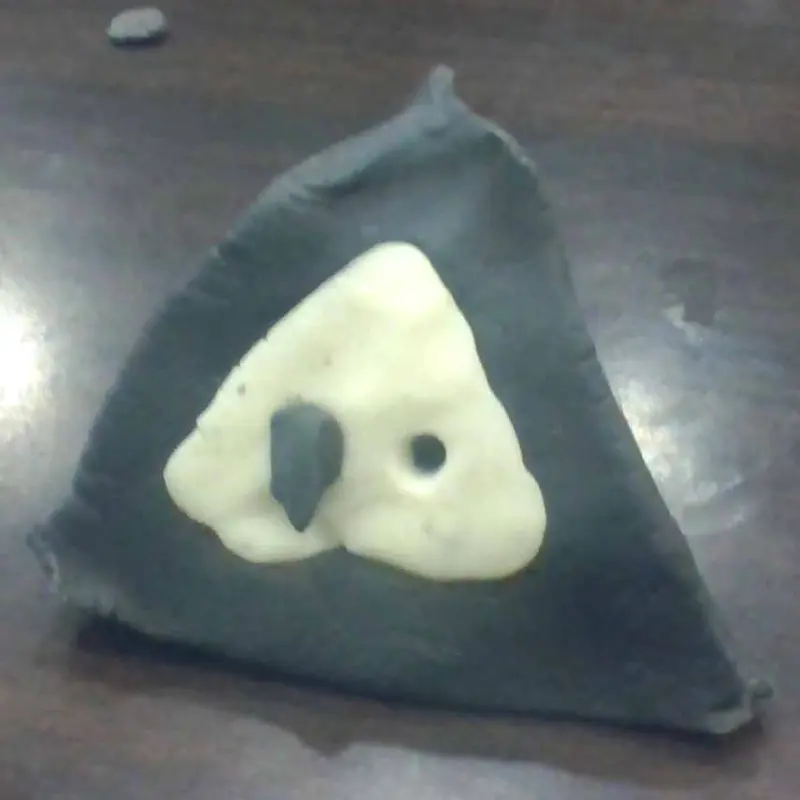
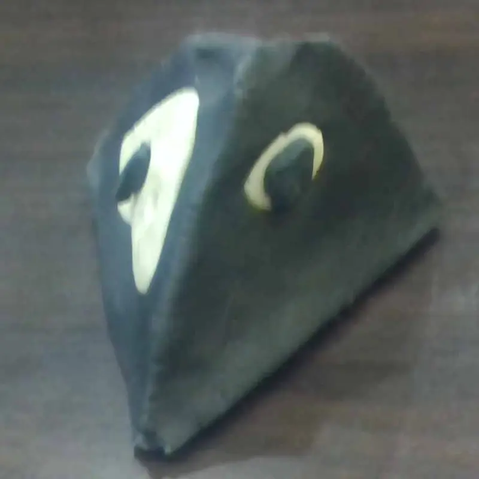
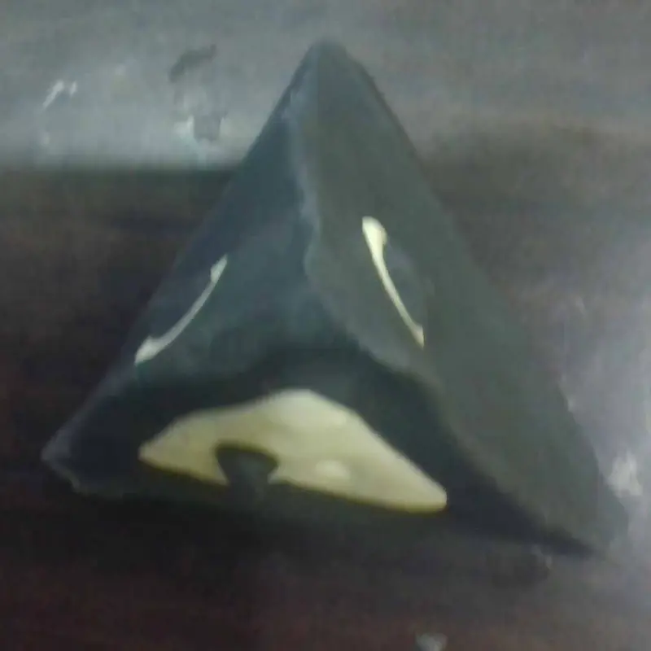
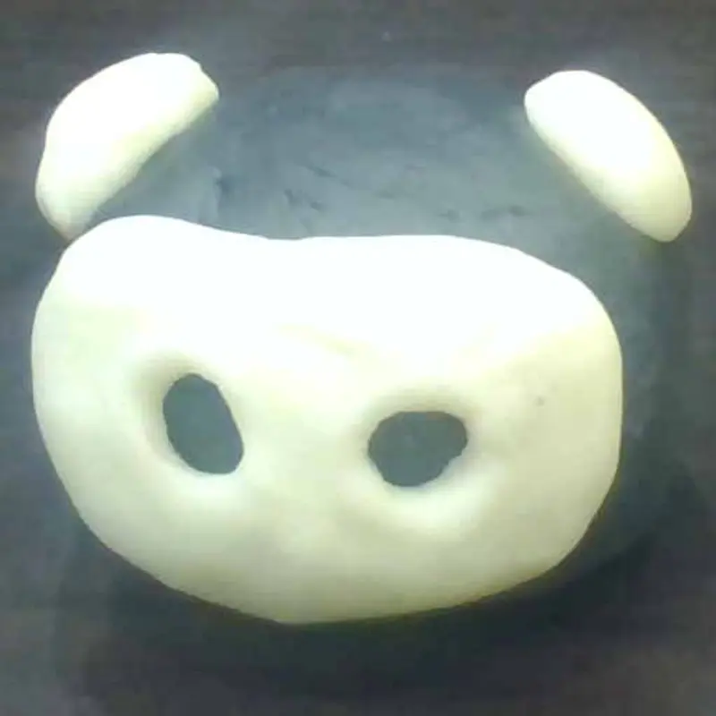
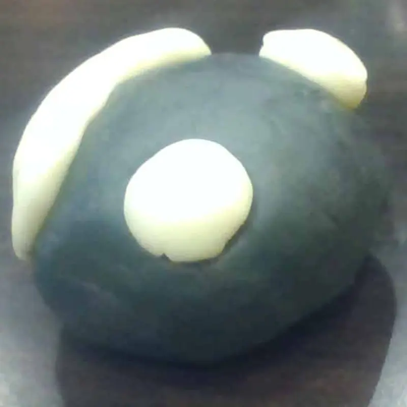
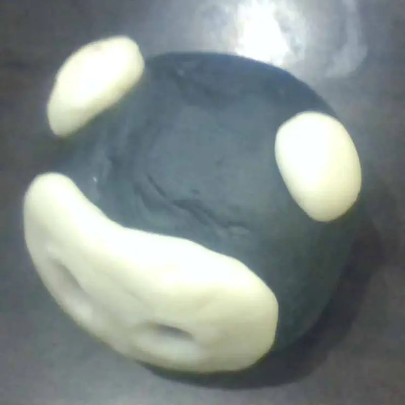
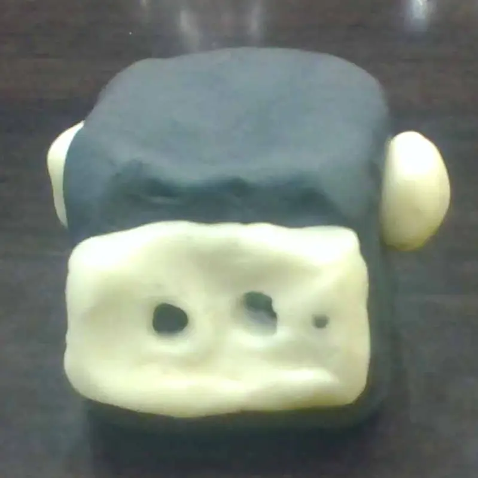
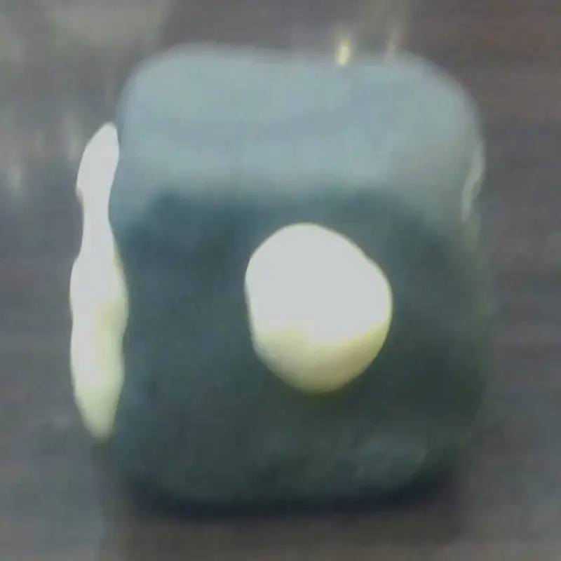
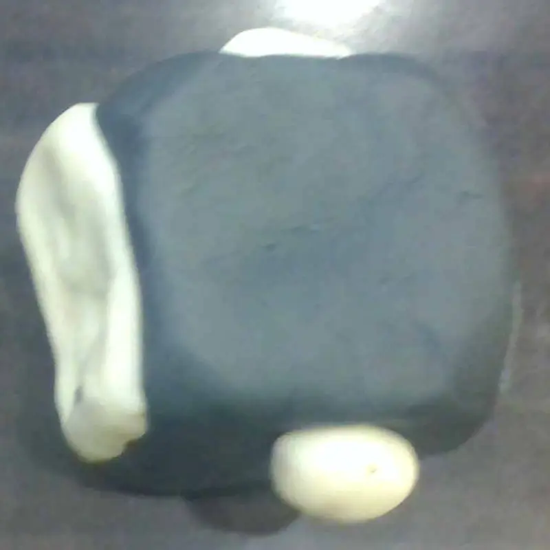

三角豬
禁止擁抱，擁有四個完美等邊三角形的稜角生物。雖然外表銳利，但內心很柔軟。



圓豬
毫無稜角、經過打磨而成的完美球體。因為表面摩擦力趨近於零，這隻豬的一生都在「滾動」中度過。牠沒有明確的方向感，只要地面有 1° 的傾斜，牠就會無止盡的滾動。因為滾動速度太快，導致牠的常常處於暈眩的狀態。



方豬
由六個正方形構成的剛硬生物，性格極度固執。牠擁有三隻豬中最完美的穩定度，靜止時就彷彿與地板融為一體，推也推不動。身為空間收納強迫症的最愛，如果有很多隻方豬，牠們會自動堆疊成一根黑色的塔。